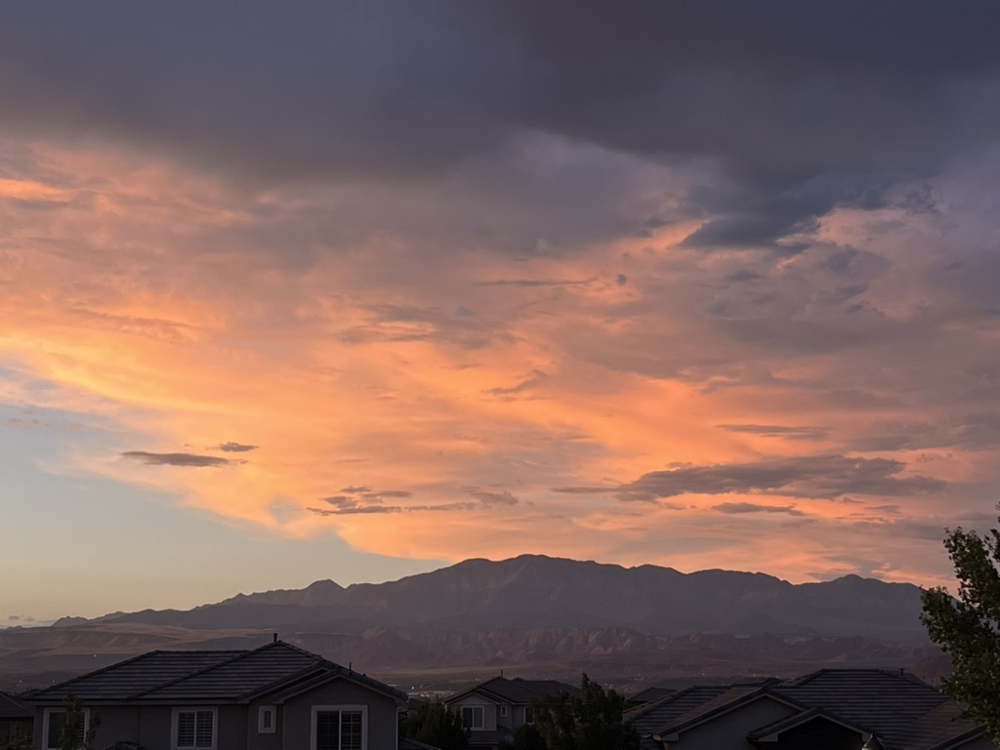
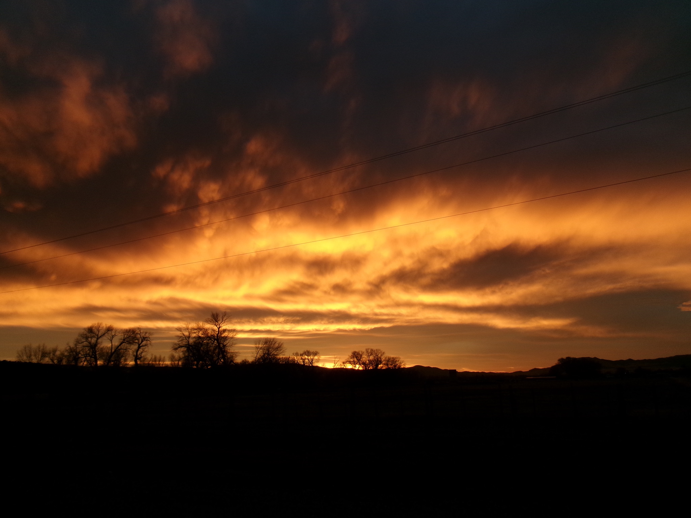
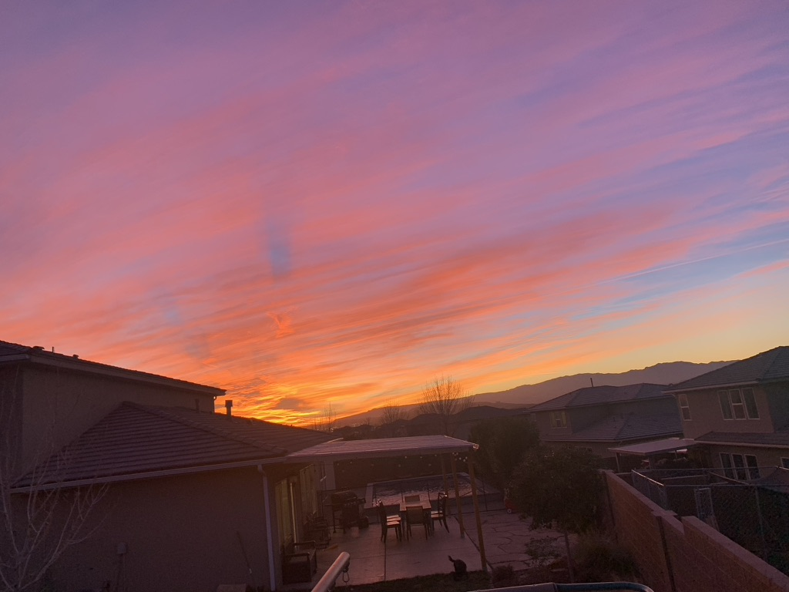
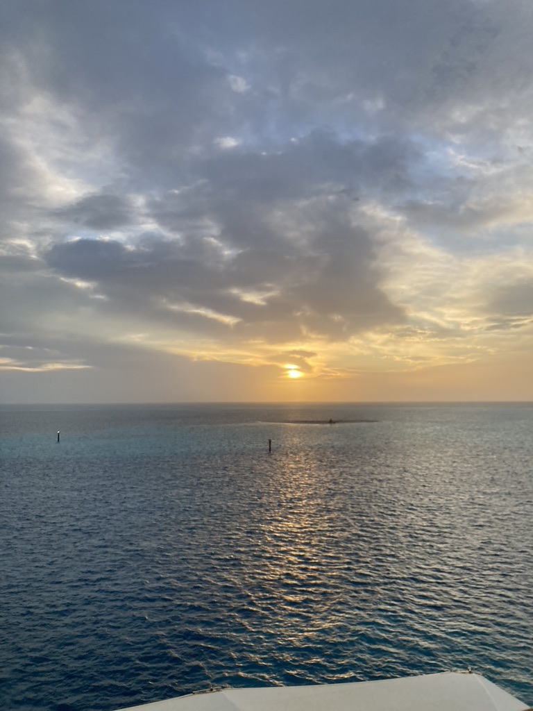
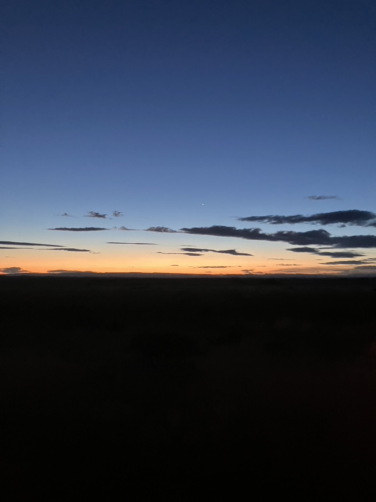

Sky Collection
Why the Sky?
The sky has always been a fasinating thing to me. There is beauty in every moment of the sky: day or night sky: cloudy or clear: bright or dull. The sky is ever-changing and we are just lucky to witness it. Sunsets and sunrises in particular fill my camera roll because I am drawn to how many different colors and moods the sky captures at the beginning and end of everyday, almost like the world itself is inviting you to smile and be bright. I believe photography can capture more than just the way things look, but also the way they feel, and sunrises and sunsets just feel like a deep breath in and out. The sunset reminds us that all bad days come to an end. The sunrise reminds us that everyday is a chance to start new.

Pretty little clouds - The way the clouds and colors are layered in this photo feels like a Bob Ross painting: every layer is just like a "happy little cloud."

Edge of tomorrow - The world's way of ending on a high note.

Radiant Sky - Rays of color fill every part of the sky so you can see it from wherever you are.

Good Morning - Sunrises on the sea feel like a moment to let yourself relax and be one with yourself.
